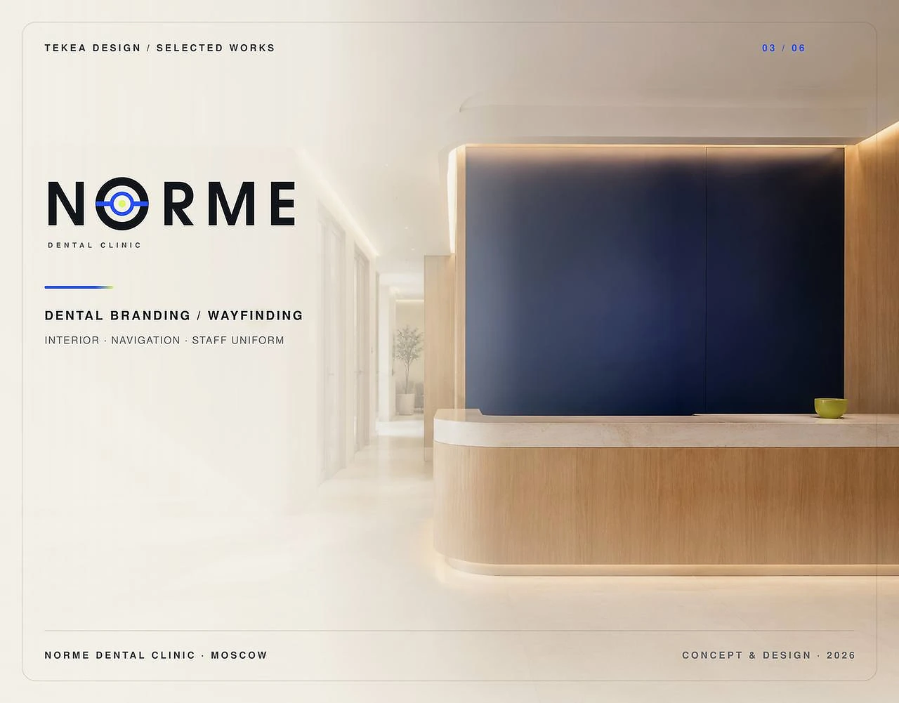
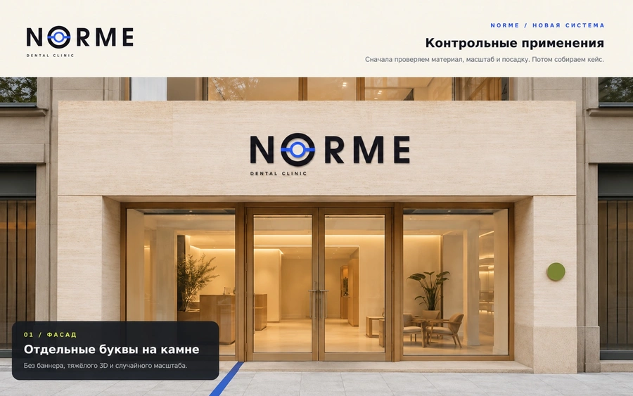
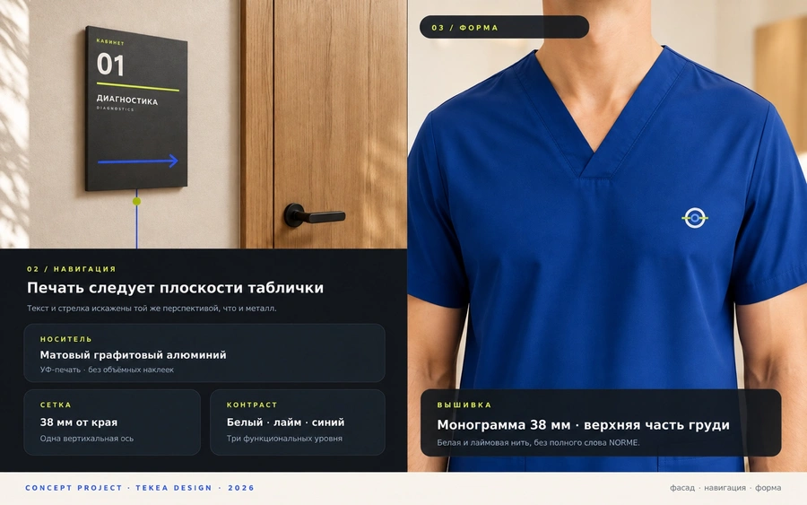

TEKEA / CASE STUDY · DENTAL / BRANDING + WAYFINDING
NORME

01 / OVERVIEW
THE PROJECT
BUILT AS ONE SYSTEM
FROM THE START
A dental clinic identity extended beyond the logo into the physical environment: facade signage, internal navigation and staff apparel.
02 / DIRECTION
VISUAL DIRECTION
The system balances clinical precision with a warmer architectural context. A compact symbol, disciplined typography and a blue-to-lime accent create a recognizable language across space and uniform applications.
03 / PROJECT MODULES
THE PROJECT, BLOCK BY BLOCK
Each part of the case is presented as a dedicated high-resolution frame, preserving detail, typography and visual rhythm.

